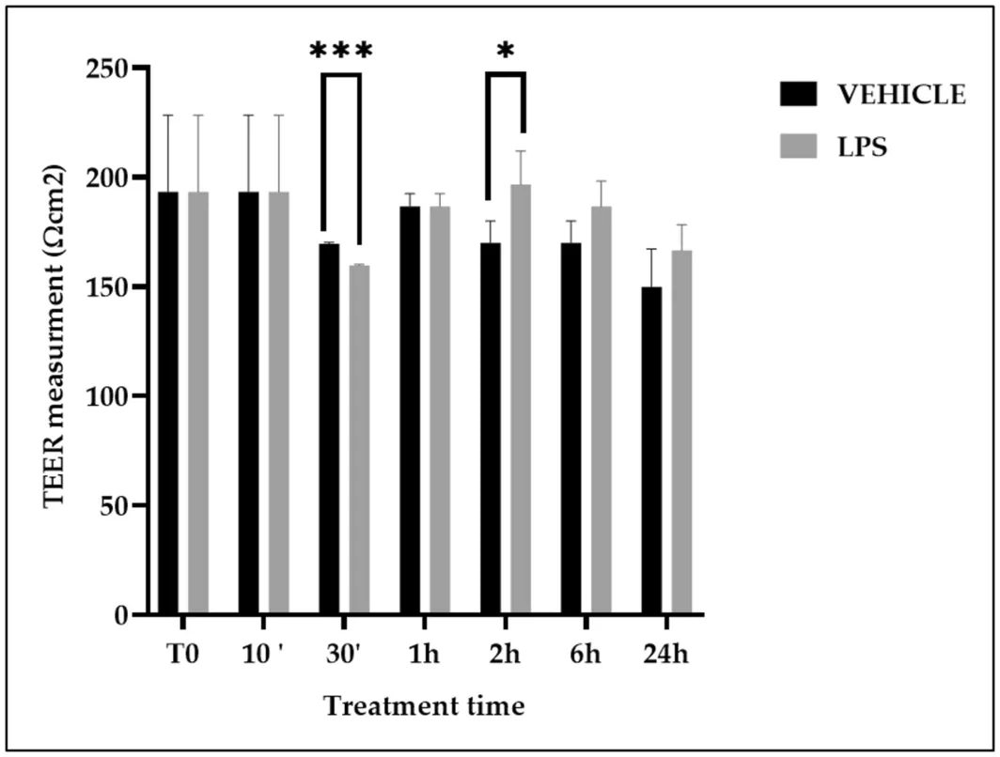
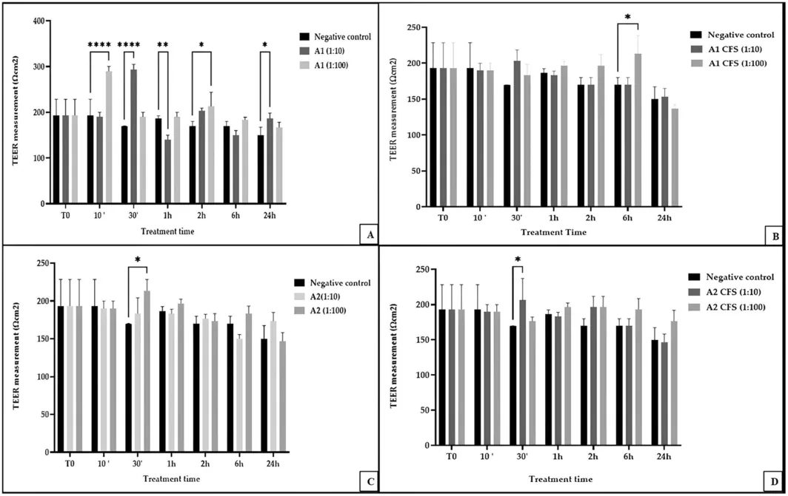
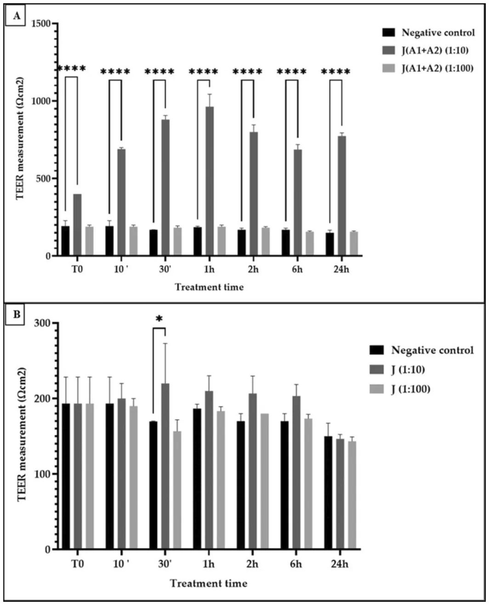
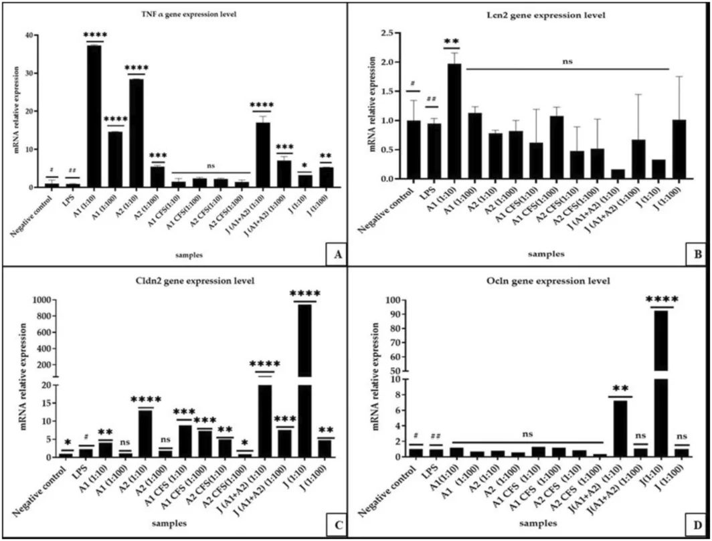

Алеппо қарағайы тұқымының шырыны ішек тосқауылын нығайта ала ма


Ішек тосқауылы ағзаны токсиндерден қорғайды, бірақ стресс пен қабыну оны әлсіретуі мүмкін. Ғалымдар пробиотиктермен ферменттелген Алеппо қарағайы тұқымының сусыны жасушааралық байланыстарға қалай әсер ететінін тексерді. Нәтижелер бұл сусынның тосқауылдық қызметті бактериялардың өзінен немесе олардың метаболиттерінен гөрі жақсырақ нығайтатынын көрсетті.
Басты ойлар
- Қарағай тұқымының ферментациясы TEER-ді 963,33 Ом·см²-ге дейін арттырады.
- Сусын Caco-2 жасушаларындағы тығыз байланыстырушы ақуыздарды күшейтеді.
- Ферментация өнімі жеке метаболиттерге қарағанда тиімдірек.
Толығырақ
Зерттеуде ішек эпителийіне ұқсас Caco-2 жасушаларының моноқабаты қолданылды. Жасушалар 21 күн бойы толық саралануға дейін өсіріліп, олардың тұтастығы трансэпителиалды электрлік кедергіні (TEER) өлшеу арқылы бақыланды. Қарағай тұқымының шырынын (2:3 қатынасында) ферменттеу үшін 8 log CFU/g тығыздықтағы Lactiplantibacillus paraplantarum A1 және L. plantarum A2 штамдары қолданылды.
25°C температурада 24 сағаттық ферментациядан кейін үлгілер Caco-2 жасушаларына әсер етті. Зерттеушілер RT-qPCR әдісі арқылы TEER және окклюдин (OCLN) мен клаудин-2 (CLDN2) сияқты тығыз байланыстырушы ақуыздардың (TJP) экспрессия деңгейін өлшеді. Ферменттелген шырынды қолдану TEER мәндерін 690–963,33 Ом·см²-ге дейін арттырды, бұл тосқауылдың нығайғанын білдіреді. Сондай-ақ жасушааралық қосылыстардың тұтастығына жауап беретін гендер экспрессиясының реттелуі байқалды.
Шектеулер
Зерттеу тек in vitro жасушалық моделінде жүргізілген, сондықтан нәтижелерді клиникалық сынақтарсыз адамға тікелей қолдануға болмайды.
Мақаланың толық аудармасы
Түйіндеме
Алеппо қарағайының (Pinus halepensis Mill.) тұқымдары тунистік ашытылған «Assidet zgougou» деп аталатын тағам өнімінің негізгі ингредиенті болып табылады. Оның денсаулыққа әлеуетті пайдасы туралы мәліметтер бар. Бұл қасиеттер оның құрамындағы фитохимиялық заттармен, әсіресе ауырсынуды басатын, қабынуға қарсы және антиоксиданттық қабілеті бар фенолды қосылыстармен байланысты болуы мүмкін. Фитохимиялық заттардан басқа, zgougou шырынын өндіруге тән сүт қышқылды ашу процесі ашу процесін басқаратын микроорганизмдер есебінен микробқа қарсы және антиоксиданттық белсенділікке әкелуі мүмкін. Өз кезегінде, мұндай белсенділік ішек микробиотасының құрамы мен функциясына оң әсер етіп, ішек тосқауыл функциясын жақсартуға әкеледі.
Адам ағзасын сау ұстауда маңызды рөл атқаратын ішек эпителийінің тосқауылы биохимиялық, иммунологиялық, микробтық және құрылымдық компоненттерді қамтитын күрделі өзара әрекеттесулердің нәтижесі болып табылады. Шырышты қабық пен ішек микробиотасынан басқа, ішек эпителийінің тығыз байланыс ақуыздары (TJP) оның «қақпа мен тосқауыл» функциясы үшін өте маңызды. Шын мәнінде, TJP әдетте эндотелий және эпителий жасушалары арасындағы zona occludens-те орналасады. Олар дененің апикалды (қуыс) және базолатеральды (қуыстан тыс) жақтарын бөліп тұратын селективті өткізгіш жасуша тосқауылдарын жасау арқылы парацеллюлярлық жолмен қозғалатын су, иондар және басқа еріген заттарға жасуша өткізгіштігін бақылау үшін қажет. Бұл тығыз байланыстарға көлік процестерін бақылауға және гомеостазды сақтауға мүмкіндік береді.
Маңызды
Окклюдин және клаудиндер сияқты тығыз байланыс ақуыздары (TJP) иондар мен молекулалар үшін өткізгіштікті реттеу арқылы ішек тосқауылының тұтастығын сақтауда өте маңызды.
Окклюдин және клаудиндер сияқты TJP экспрессиясы жоғары дәрежеде тіндерге тән, динамикалық және нәзік реттеледі. Окклюдин (OCLN), бірінші анықталған TJP, ішек эпителий жасушалары арасындағы тығыз байланыстарды тұрақтандырады және құрылымдық тұтастығын қамтамасыз етеді. Шамадан тыс синтезделгенде, ол цитокиндер тудыратын ішек өткізгіштігінің артуын шектейді және оның экспрессия үлгілері даму процесінде немесе қатерлі ісік сияқты ауру жағдайларында өзгереді. Клаудин изоформалары (мысалы, 1, 3, 5, 11) бүйрек, өкпе, ішек сияқты мүшелерге, сондай-ақ қан-ми тосқауылына бірегей тосқауыл қасиеттерін береді. Атап айтқанда, Клаудин-2 (CLDN2) ішек эпителийінің жақсартылған өткізгіштігімен байланысты.
Lactiplantibacillus plantarum ішек тосқауылын айтарлықтай жақсартады және тығыз байланыстарды (TJs) жақсарту арқылы «ішек өткізгіштігі синдромының» алдын алады. Бұл түрдің кейбір штамдары тиісті гендердің транскрипция деңгейін арттыру арқылы Zonula occludens-1 (ZO-1), окклюдин және клаудин-1 сияқты TJP өндірісін және дұрыс локализациясын арттырады; бұл өз кезегінде ішек өткізгіштігін төмендетеді және қабынудан қорғайды. Ісік некрозы факторы-α (TNFα) — бұл TJs тұтастығын OCLN интернализациясы арқылы реттейтін қабынуға қарсы цитокин, ол ішек өткізгіштігін арттырады. Липокалин-2 (LCN2) — ішек эпителийінің тосқауылының тағы бір ақуыз компоненті болып табылады, ол бактерияға қарсы белсенділікке ие және қабыну стимулдары арқылы қоздырылуы мүмкін. LCN2 туа біткен иммунитетте темірді реттейтін маңызды фактор және бактериостатикалық фактор болып табылады, ол қабынулы ішек аурулары (IBD), қатерлі ісік және метаболикалық бұзылыстар сияқты әртүрлі ауруларда күрделі рөлдерді атқарады.
Түсіндірме
Бұл зерттеуде Caco-2 моделі — ішек эпителийіне еліктейтін моноқабат түзуші адам тоқ ішегінің аденокарциномасы жасуша желісі қолданылады.
Кейбір алдыңғы есептер L. plantarum тобындағы бактериялар LCN2-мен негізінен иммундық жүйе арқылы өзара әрекеттесетінін көрсетті. L. plantarum-ның кейбір штамдары макрофагтарды LCN2 бөлуге итермелеуі мүмкін, бұл қажетсіз бактериялардың темірмен қоректенуін шектеуден басқа, ісікке қарсы иммунитетті күшейтеді немесе қабынуға әсер етеді. Тотығу стрессі және бірқатар патологиялық жағдайлар ішек тосқауылының тұтастығына зиян келтіруі мүмкін, бұл патогенді микроорганизмдер мен олардың улы метаболиттерінің ішек қуысынан астыңғы қабаттарға (мысалы, иммундық функциясы бар шырышты қабықтың меншікті пластинкасы) өтуін жеңілдетеді. Жақында кейбір пробиотикалық бактериялар ішек тосқауылының функциясын қалпына келтіру арқылы иесінің денсаулығына пайда әкелетіні көрсетілді. Мысалы, L. plantarum тобы және Bifidobacterium longum subsp. infantis пробиотикалық штамдары TJs-те қатысатын гендердің транскрипция деңгейін арттыру арқылы ішек тосқауылын қалпына келтіре алады. Тосқауыл функциясын қалпына келтіруге пробиотикалық микроорганизмдерден алынған жасушасыз супернатантты (CFS) енгізу арқылы да қол жеткізуге болады, бұл «постбиотикалық» шекараны ашады. Сонымен қатар, пробиотиктер тағамдық ингредиент ретінде енгізілгенде де өздерінің пайдалы белсенділігін көрсете алады.
Дегенмен, екінші жағдайда тағамдық матрица мен пробиотиктер арасындағы шекараларды бақыланатын пайдалы әсерге қосқан үлесі тұрғысынан анықтау қиын. Бұл зерттеу пробиотикалық қасиеттері бар екі таңдалған лактобацилланың ішек өткізгіштігіне және OCLN, CLDN2 және LCN2 экспрессия деңгейіне in vitro әсерін түсінуге бағытталған. Лактобациллалар әртүрлі препараттарда сынақтан өткізілді: (i) жалғыз сұйық дақылдан алынған жасуша биомассасы; (ii) жалғыз сұйық дақылдан алынған CFS; (iii) екі лактобацилланың комбинациясы арқылы алынған zgougou. Сонымен қатар, өздігінен ашытылған zgougou да адамның Caco-2 жасушаларының моноқабатын пайдалана отырып, in vitro моделі ретінде сол талдаулардан өткізілді.
ATCC (Роквилл, АҚШ) -тан сатып алынған тоқ ішек қатерлі ісігі жасушаларының желісі болып табылатын Caco-2 (адам тоқ ішегінің аденокарциномасы) жасушалары 0,4 мкм кеуек өлшемді (Corning Inc., Нью-Йорк, АҚШ) Transwell 12-ұяшықты планшеттердің жоғарғы бөлігіне егілді. Құрамында L-глутамин, 10% жылумен инактивацияланған ұрық бұқа сарысуы (Thermo Fisher Scientific), 1% (1 М) 4-(2-гидроксиэтил)-1-пиперазин этансульфон қышқылы (HEPES, Sigma-Aldrich, Сент-Луис, АҚШ), 1% натрий пируваты (100 мМ) ерітіндісі (Sigma-Aldrich), 1% стрептомицин (10 мг/мл) ерітіндісі және пенициллин (10 000 U/мл) ерітіндісі (Thermo Fisher Scientific) бар Dulbecco Modified Eagles Medium (DMEM, Thermo Fisher Scientific, Массачусетс, АҚШ) ортасы пайдаланылды. Жасушалар 37°C температурада 5% CO2 атмосферасында 21 күн бойы инкубацияланды және күн сайын жаңа DMEM ортасымен қоректендірілді. Моноқабаттың толық дифференциациясы Millicell ERS вольт-омметрін (Millipore, Эшборн, Германия) пайдаланып транзипителийлік электрлік кедергіні (TEER) өлшеу және басқа дереккөздерде келтірілген қадамдарды сақтай отырып, микроскоп көмегімен жасуша қабатының тұтастығын визуалды бақылау арқылы расталды.
Бұрын дәстүрлі zgougou (Missaoui et al. 2019) -дан бөлінген және Бари ALDO MORO университетінің (Италия) Топырақтану, өсімдік шаруашылығы және азық-түлік ғылымдары департаменті мен Монастир университетінің (Тунис) Биотехнология жоғары институтының Биоресурстар: интегративті биология және валоризация департаментінің дақылдар коллекциясына жататын Lactiplantibacillus paraplantarum A1 және L. plantarum A2 de Man Rogosa және Sharpe (MRS) сорпасында (Oxoid, Безингсток, Хэмпшир, Ұлыбритания) 37°C-та 24 сағат бойы анаэробты жағдайда өсірілді. Содан кейін дақыл сорпасы центрифугаланды (10 000× g, 20 мин, 4°C) және CFS жасуша биомассасынан бөлінді. Zgougou шырыны ұнтақталған Алеппо қарағайы тұқымдары мен су қоспасынан 2:3 (w:v) қатынасында алынды, L. paraplantarum A1 және L. plantarum A2 (J A1 + A2) -мен инокуляцияланды (әрқайсысы 8 log CFU/г жасуша тығыздығында) және 25°C-та 24 сағат бойы ашытылды. Сонымен қатар, өздігінен ашытылған zgougou (J) шырыны лактобациллалар қоспастан 25°C-та 24 сағат бойы ашытудан кейін алынды. Таңдалған лактобациллалармен басталған zgougou да, өздігінен ашыту арқылы алынған zgougou да талдауға дейін -20°C-та сақталды.
Дифференциациядан кейін (21 күн, TEER мәні: шамамен 193 Ом·см2), Caco-2 жасушалары жаңа Transwell 12-ұяшықты планшеттерге ауыстырылды. Конфлюенттікке қол жеткізгенде (шамамен 6 күн), жасушалар 24 сағат бойы жеке-жеке стимуляцияланды: MRS сорпасында өсірілген пробиотикалық бактериялар A1 және A2 биомассасымен (әрқайсысы 8 log CFU/мл ретіндегі жасуша тығыздығында), сол бактериялардан алынған CFS, өздігінен ашытылған zgougou шырыны (J) және пробиотикалық бактериялар A1 және A2-мен ашытылған zgougou шырыны (J (A1 + A2)). Жасушаларды қамтымайтын бос ұяшық бланк ретінде пайдаланылды. Кез келген бактериялық препаратқа немесе zgougou шырынына әсер етпеген жасушалар барлық тәжірибелерде теріс бақылау ретінде пайдаланылды (тасымалдаушы). Оң бақылау ретінде 1 мкг/мл Escherchia coli липополисахариді (LPS) (Sigma-Aldrich) пайдаланылды. Содан кейін планшеттер 37°C-та 10% CO2 және 90% ауа ортасында инкубацияланды. TEER Millicell ERS вольт-омметрі көмегімен өлшенді және жасуша моноқабатының тұтастығы бұрын хабарланған қадамдарды сақтай отырып, микроскоп астында визуалды бақылау жасалды. Моноқабат тұтастығы 10 минут, 30 минут, 1, 2, 6 және 24 сағаттық инкубациядан кейін бағаланды. Өлшемдер бланкте өлшенген кедергінің орташа мәндерін алғаннан кейін стандартты бірліктерде (Ом·см2) көрсетілді. Биологиялық трипликаттардың екі техникалық қайталануы жүзеге асырылды.
Ішек тосқауылының тұтастығына қатысты гендердің экспрессия деңгейі RT-qPCR арқылы талданды. Жалпы РНҚ 24 сағат бойы жоғарыда көрсетілген емдеу шараларына әсер еткен жасушалардан өндірушінің нұсқауларын сақтай отырып, Invitrogen TRIzol реагенті (Thermo Fisher Scientific) көмегімен бөлініп алынды. Жалпы РНҚ (500 нг) басқа дереккөздерде сипатталғандай, кездейсоқ праймерлермен iScript cDNA Synthesis kit (Biorad, Калифорния, АҚШ) көмегімен cDNK-ға кері транскрипцияланды. Келесі TaqMan (Thermo Fisher Scientific) ген экспрессиясы талдаулары пайдаланылды: ісік некрозы факторын кодтайтын TNFα гені үшін Hs00174128_m1; клаудин 2-ні кодтайтын CLDN2 гені үшін Hs00252666_s1; окклюдинді кодтайтын OCLN гені үшін Hs05465837_g1; липокалин 2-ні кодтайтын LCN2 гені үшін Hs01008571_m1; және глицеральдегид-3-фосфатдегидрогеназаны кодтайтын GAPDH гені үшін Hs02758991_g1. Соңғысы үй шаруашылығы гені ретінде пайдаланылған. ПТР CFX96 жүйесінде (Biorad) Talà et al. (2022) тарапынан хабарланған реакция қоспасы мен шарттарын пайдалана отырып жүзеге асырылды. Мақсатты гендердің экспрессия деңгейі GAPDH генінің экспрессия деңгейіне қатысты ΔΔCt әдісі көмегімен есептелді.
Түсіндірме
ΔΔCt әдісі — ген экспрессиясын сандық салыстырудың стандартты әдісі болып табылады, ол бақылауға қатысты мақсатты ген мРНҚ мөлшерінің қанша есе өзгергенін анықтауға мүмкіндік береді.
Биологиялық трипликаттардың үш техникалық қайталануы жүзеге асырылды.
Жасуша мәдениетінің ортасы әртүрлі емдеу шараларына әсер еткен жасушаларды қамтитын ұяшықтардың жоғарғы және төменгі бөлігінен алынды және центрифугаланды (10 мин). Супернатанттар Bermudez-Brito et al. (2015) тарапынан сипатталғандай, 96-ұяшықты планшеттермен ELISA жиынтығы (RD Systems, Миннеаполис, МН, АҚШ) көмегімен TNFα-ны сандық анықтаудан өткізілді. Биологиялық трипликаттардың екі техникалық қайталануы жүзеге асырылды.
Статистикалық талдау Graphpad Prism 9.3.1 көмегімен жүзеге асырылды. Барлық деректер орташа ± SD ретінде көрсетілді. Статистикалық маңыздылық екі жақты Student t-тесті және екі жақты Anova тесті (* p < 0,05; p < 0,01; * p < 0,001; **** p < 0,0001) арқылы бағаланды. Нәтижелер p < 0,05-те статистикалық тұрғыдан маңызды деп есептелді.
Біздің деректерімізге сәйкес, бұл zgougou (Missaoui et al. 2019) -дан бөлінген екі лактобацилланың (L. paraplantarum A1 және L. plantarum A2), олардың CFS, жоғарыдағы лактобациллалармен ашытылған zgougou шырынының (J (A1 + A2)) (Minervini et al. 2020) және өздігінен ашытылған zgougou шырынының (J) ішек эпителийі жасушаларының тұтастығына әсерін талдаған алғашқы зерттеу болып табылады. Талдауларда ішек эпителийінің in vitro моделі ретінде Caco-2 моноқабат жасушалары пайдаланылды. Біз LPS (1 мкг/мл) арқылы емдеу теріс бақылауға (емделмеген жасушалар) қатысты TEER мәндерінде уақытқа байланысты жауап тудырғанын анықтадық. Атап айтқанда, LPS әсерінен 30 минут өткен соң, Caco-2 моноқабатының TEER мәні емделмеген жасушалар TEER-іне қарағанда айтарлықтай (p < 0,001) төменірек (шамамен 160 Ом·см2) болды; керісінше, LPS әсерінен 2 сағат өткен соң, TEER шамамен 193 Ом·см2-ге дейін көтерілді және емделмеген жасушаларға қарағанда айтарлықтай (p < 0,05) жоғары болды (1-сурет). Төменірек TEER мәндері жасуша моноқабатының өткізгіштігінің артуымен тікелей байланысты, бұл ішек тосқауылының бұзылуын және «өткізгіш» ішектің басталуын көрсетеді. TJs-ке болған бұл зақым қабыну жолдарын қоздыруы мүмкін, бұл бұрын хабарланғандай, қабынуға қарсы цитокиндердің шығарылуына әкеледі. Ішек тұтастығы эпителий байланыс жабысу кешені, шырышты қабық және иесі жасушалары мен бактериялар шығаратын өнімдер арқылы сақталады.
Абайлаңыз
Зерттеу in vitro Caco-2 жасуша желісінде жүргізілді; нәтижелер иммундық және жүйке жүйелерінің күрделі реттелуіне байланысты тірі ағзадағы процестерден өзгеше болуы мүмкін.
1:100 қатынасында сұйылтылған L. paraplantarum A1 биомассасына әсер еткен Caco-2 моноқабаты 10 минут (p < 0,0001) және 2 сағаттан (p < 0,05) кейін емделмеген жасушаларға қатысты жоғары TEER мәндерін көрсетті; кейіннен ешқандай маңызды (p > 0,05) айырмашылықтар табылмады (2A-сурет). Моноқабат сол LAB биомассасына (1:10) сұйылтылған күйде әсер еткенде, TEER 30 минуттан (p < 0,0001) және 24 сағаттан (p < 0,05) кейін артты. Дегенмен, соңғы үлгіде 1 сағаттан кейін TEER-дің төмендеуі (p < 0,01) анықталды (2A-сурет). Caco-2 моноқабаты 6 сағат бойы L. paraplantarum A1 CFS (1:100 сұйылтылған) әсеріне ұшырағанда, TEER емделмеген жасушаларға қарағанда айтарлықтай (p < 0,05) жоғары екендігі анықталды (2B-сурет). Caco-2 моноқабатын L. plantarum A2 биомассасымен (1:100 сұйылтылған) емдеу тек 30 минуттан кейін емделмеген жасушаларға қарағанда айтарлықтай (p < 0,05) жоғары TEER (213 Ом·см2) -ге әкелді (2C-сурет). 30 минутта L. plantarum A2-нің сұйылтылған (1:10) CFS-імен емделген моноқабат жасушаларының TEER-і емделмеген жасушаларға қарағанда айтарлықтай жоғары болды (2D-сурет). Жалпы алғанда, Caco-2 жасуша желісін пробиотикалық LAB-пен емдеу жасуша тосқауылының тұтастығына оң әсер етуі мүмкін, бірақ бұл қолданылған LAB, қолданылған LAB дозасы және әсер ету уақытына байланысты. Пробиотиктер, әсіресе Lactiplantibacillus түріне жататындар, ішек денсаулығын бірнеше механизмдер арқылы жақсарта алады, олардың бірі жақсы ішек тосқауылын сақтау болуы мүмкін. Бұл нәтижелер L. plantarum-мен емдеуде жасуша мембранасының тұтастығына оң әсер еткен алдыңғы зерттеулермен сәйкес келеді; алайда, кейбір штамдардың TEER мәндеріне әсер етпейтіні туралы хабарланған. Тұздалған қырыққабаттан бөлінген L. plantarum C06 және Lactobacillus acidophilus C11 он екі елі ішек жасушаларына жабысу және ішек биотикалық стрессіне төзімділік тұрғысынан жақсы in vitro көрсеткіштерін көрсетті. Біздің эксперименттік шартымызда, Caco-2 жасуша желісінің екі лактобацилла CFS-іне ұзақ мерзімді (30 минут — 6 сағат) әсерінен кейін байқалған TEER-дің артуы, лактобацилла CFS-інде бар кейбір биоактивті молекулалар алдыңғы есептерге сәйкес жасуша-жасуша өзара әрекеттесуінде шешуші рөлдерге ие болуы мүмкін екенін көрсетеді.
Caco-2 моноқабаты L. paraplantarum A1 және L. plantarum A2 (J A1 + A2) арқылы ашытылған және 1:10 қатынасында сұйылтылған zgougou шырынына әсер еткенде, біз барлық уақыт нүктелерінде теріс бақылауға қарағанда жоғары (p < 0,0001) TEER мәндерін (690–963 Ом·см2) таптық. Жасушалар 1:100 қатынасында сұйылтылған J A1 + A2-мен емделгенде маңызды (p > 0,05) айырмашылықтар байқалмады (3A-сурет). Өздігінен ашытылған zgougou шырынымен (J) Caco-2 моноқабатын емдеу кезінде табылған жалғыз маңызды (p < 0,05) айырмашылық J, 1:10 қатынасында сұйылтылған күйде 30 минуттық әсерінен кейін табылды, бұл теріс бақылауға қарағанда жоғары TEER-ге әкелді (3B-сурет).
Біздің тұжырымдарымыз өсімдік негізіндегі ашытылған азық-түлік өнімдері туралы алдыңғы есептермен сәйкес келеді, олар микробтар мен олардың метаболиттеріне бай болғандықтан, фитохимиялық заттарынан басқа, ішек тосқауылының өткізгіштігін модуляциялай алады. Әртүрлі зерттеулер кефир, дахи және корей кимчиі сияқты ашытылған азық-түліктер, әртүрлі пробиотикалық LAB штамдарын пайдалана отырып, қатерлі ісік, IBD, жүйке анорексиясы, жүрек-қан тамыр аурулары және диабет сияқты көптеген ауруларға қарсы пайдалы болуы мүмкін екенін хабарлады. Біздің эксперименттік шартымызда біз екі пробиотикалық штамм, олар жеке сынақтан өткенде бірдей әсер көрсетпесе де, zgougou шырынының ашыту процесін басқару үшін бірге пайдаланылғанда қысқа уақыт ішінде ішек тұтастығын жақсарта алатынын анықтадық. Пробиотикалық лактобациллалар мен өсімдік матрицасы (Алеппо қарағайы тұқымдары) комбинациясымен байланысты әсерге қоса, біз пробиотикалық лактобациллалар мен иесінің ішегі арасындағы кейінгі өзара әрекеттесулер жұтылған кезде жүзеге асуы мүмкін екенін болжауымыз мүмкін. Шынында да, өсімдік матрицалары пробиотиктерді асқазан-ішек жолы арқылы өтуде, олардың тоқ ішекке кейінгі шығуына дейін қорғай алады. Осылайша, бұл нәтижелер таңдалған лактобациллалармен ашытылған zgougou шырынының ішек эпителийінің тосқауылын нығайту үшін әлеуетті әсерін көрсетеді, бірақ жасуша-жасуша өзара әрекеттесуі бойынша кейінгі зерттеулер талап етіледі.
L. paraplantarum A1 және L. plantarum A2 жасуша биомассалары қабынуға қарсы цитокин TNFα-ны кодтайтын геннің мРНҚ экспрессия деңгейін айтарлықтай (p < 0,0001) арттырды (4A-сурет). Керісінше, Caco-2 жасушаларының жоғарыда айтылған лактобациллалардан алынған CFS әсеріне ұшырауы TNFα гені экспрессия деңгейінің ешқандай маңызды өзгерісіне әкелмеді. Сонымен қатар, екі лактобацилламен ашытылған сұйылтылған zgougou шырыны (J (A1 + A2)) TNFα ген экспрессиясын күшті күшейтті (p < 0,001) (4A-сурет). Өздігінен ашытылған zgougou шырыны (J) да TNFα экспрессиясын арттырды, алайда J (A1 + A2)-ге қарағанда жұмсағырақ әсермен. TNFα қабынуға қарсы цитокин деп есептеледі, бірақ кейбір жағдайларда ол патогендерге қарсы иммундық жауаптарды ынталандыруда қатысуы мүмкін. Ішек микробиотасы әртүрлі иммундық байланысты гендердің экспрессиясына әсер етуі мүмкін. Әртүрлі LAB штамдары TNF-α өндірісіне әртүрлі әсер етуі мүмкін, бұл пробиотикалық штамдарды мұқият таңдау және сипаттау қажеттілігін көрсетеді. TNF-α экспрессиясын тежейтін немесе қоздыратын пробиотикалық LAB сәйкесінше иммундық-ынталандырушы немесе иммундық-сауықтырушы әсерге ие болуы мүмкін.
Маңызды
Лактобацилла биомассасы мен ашытылған zgougou шырыны TNFα гені экспрессиясын арттырғанымен, ELISA талдауы TNFα ақуызының өзінің концентрациясында айырмашылықтарды анықтамады, бұл күрделі пост-транскрипциялық реттелуді көрсетеді.
Біздің эксперименттік шартымызда, лактобацилла биомассасы немесе сол лактобациллалармен ашытылған zgougou әсеріне ұшыраған Caco-2 жасушалары TNF-α генінің жоғары экспрессиясын көрсеткенімен, ELISA талдауы жоғарғы және төменгі супернатант арасында TNFα концентрациясында айырмашылықтарды анықтамады (S1-кесте). TNFα-ны кодтайтын геннің экспрессия деңгейі мен TNFα деңгейіндегі айырмашылықтардың жоқтығы арасындағы сәйкессіздік осы қабынуға қарсы цитокин синтезін блоктайтын транскрипциялық және пост-транскрипциялық реттеу жүйелерімен түсіндірілуі мүмкін.
L. paraplantarum A1 биомассасына (1:10 сұйылтылған) әсер еткен Caco-2 моноқабаты теріс (емделмеген жасушалар) және оң (LPS әсеріне ұшыраған жасушалар) бақылауларға қатысты LCN2 гені экспрессия деңгейінің артқанын (p < 0,01) көрсетті (4B-сурет). Сонымен қатар, Caco-2 моноқабатын L. paraplantarum A1 биомассасымен (1:10 сұйылтылған) емдеу OCLN гені транскрипциясын қолдады (p < 0,01) (4C-сурет). Сол бактериялық штамның CFS-і OCLN генінің одан да күштірек экспрессиясын (p < 0,001) қоздырғандай көрінді. Біз сондай-ақ биомасса (1:10 сұйылтылған) (p < 0,0001) және L. plantarum A2 CFS әсеріне ұшыраған Caco-2 жасушаларында екі геннің де (LCN2 және OCLN) жоғары экспрессия деңгейін таптық (4B,C-сурет). CLDN және OCLN-ді қамтитын TJP ішек эпителийінің іргелі тосқауыл функциясына үлес қосады, бұл еріген заттардың селективті транспортына мүмкіндік береді және сонымен бірге қауіпті қосылыстар мен патогенді бактериялардың ішек қуысына жетуіне жол бермейді. Осы зерттеуде алынған нәтижелер L. plantarum-ның ерекше штамдары TJP-ні реттеу арқылы ішек эпителийінің тосқауыл функциясын нығайта алатынын көрсеткен алдыңғы зерттеулермен сәйкес келеді.
Дегенмен, бақыланатын әсерлер штамға тәуелділігінен басқа, иесі мен ішек микробиотасына да әсер еткендіктен, L. plantarum-ның TJP-ге әсері мен асқазан-ішек денсаулығы үшін тиісті салдарларын жақсырақ түсіну үшін көбірек зерттеулер талап етіледі. Caco-2 моноқабаты L. paraplantarum A1 және L. plantarum A2 (J A1 + A2) -мен ашытылған және 1:10 қатынасында сұйылтылған zgougou шырынымен емделгенде, CLDN2 (4C-сурет) және OCLN (4D-сурет) гендерінің айтарлықтай жоғары экспрессия деңгейі табылды. Өздігінен ашытылған zgougou шырыны (J), 1:10 қатынасында сұйылтылған күйде, екі геннің де одан да жоғары (p < 0,0001) экспрессиясына әкелді (4C,D-сурет). Бұл нәтижелер ішінара TEER нәтижелерімен сәйкес келеді, бұл ішек эпителийінің жақсартылған тосқауыл функциясын көрсетеді. Біз CLDN2 экспрессиясы мен TEER нәтижелері арасында анық сәйкессіздікті таптық. Дегенмен, тиісті ақуыз клаудин-2-нің функционалдық әсері бір геннің экспрессия деңгейіне емес, TJ кешенінің жалпы құрылымы мен құрамына байланысты. Сонымен қатар, CLDN2 эпителий физиологиясы мен ауруларында, мысалы, тіндерді қайта құру және эпителий гомеостазында екі жақты функцияға ие болуы мүмкін. Біздің эксперименттік шартымызда CLDN2-нің артық экспрессиясы ішек өткізгіштігінің артуынан гөрі TJ-ді қайта құруды көрсетеді. Біріншіден, бұл зерттеу ашытылған zgougou шырыны TJP-ні кодтайтын гендердің экспрессия деңгейін арттыра алатынын көрсетті. Zgougou үшін пайдаланылатын шикізат болып табылатын Алеппо қарағайы тұқымдары линол және α-линолен қышқылы, флавоноидтар және фенолдар сияқты антиоксиданттық және қабынуға қарсы белсенділікке ие биоактивті қосылыстарды қамтиды. Біздің эксперименттік шартымызда TJP-ні кодтайтын гендердің экспрессия деңгейіне бақыланатын әсерлер Алеппо қарағайы тұқымдарынан алынған биоактивті қосылыстар мен LAB-пен ашыту арасындағы синергия нәтижесінде келіп шығуы мүмкін деп болжаймыз. Өздігінен немесе таңдалған лактобациллалармен ашытылған zgougou, сондай-ақ таңдалған лактобациллалардың биомассасы мен CFS-і үстінде жүргізілетін мақсатсыз метаболомика Caco-2 моноқабатының ген экспрессиясына бақыланатын әсерлерді қай қосылыстар көбірек тудырған болуы мүмкін екенін түсіну үшін пайдалы болады.
Бұл зерттеу zgougou шырынының, ашыту түріне (өздігінен немесе екі таңдалған автохтонды лактобацилла басқаратын) қарай, адам Caco-2 моноқабатының тұтастығын нығайта алатынын көрсетті, бұл TEER-дің артуы және TJP-ні кодтайтын гендердің экспрессия деңгейімен расталады. Бұл әсер ішек үшін әлеуетті пайдалы деп есептелуі мүмкін. Алдағы зерттеулер мыналарға бағытталуы мүмкін: (i) бұл әсер биоактивті қосылыстар мен zgougou матрицасы микробиотасы арасындағы синергия нәтижесінде келіп шығуы мүмкін екенін түсіну; (ii) zgougou шырынының биологиялық белсенділігін жануарлар моделінде бағалау.






Суреттің толық сипаттамасы
24 сағаттық өңдеуден кейін RT-qPCR әдісімен анықталған, әртүрлі үлгілермен инкубацияланған Caco-2 жасушаларындағы қабынуға қарсы цитокиндер мен тығыз байланыс маркерлік гендерінің дифференциалды мРНҚ деңгейлері. (A) Көп ұяшықты планшеттерге егілген TNFα қабынуға қарсы цитокинінің қалыпқа келтірілген мРНҚ деңгейлері. (B) Caco-2 жасушаларындағы LCN2 маркерлік гендерінің қалыпқа келтірілген мРНҚ деңгейлері, (C) Caco-2 жасушаларындағы Cldn 2 маркерлік гендерінің қалыпқа келтірілген мРНҚ деңгейлері, (D) 24 сағаттық инкубациядан кейін Transwell жүйесінің сәйкесінше жоғарғы және төменгі бөлігіне егілген Caco-2 жасушаларындағы Ocln маркерлік гендерінің қалыпқа келтірілген мРНҚ деңгейлері. #: теріс бақылау; ##: оң бақылау; ns, статистикалық маңызды емес; *p < 0,05; p < 0,01; *p < 0,001; ****p < 0,0001.
Зерттеу сызбасы
Мақала рецензияланатын Food science & nutrition журналында жарияланған. Бірақ бұл да бір зерттеу ғана, түпкілікті қорытынды емес.
Дереккөз
| Дереккөз | Санат | Лицензия |
|---|---|---|
| Food science & nutrition (Europe PMC) | probiotics | CC BY 4.0 |
Дереккөздер
| Дереккөз | Сілтеме |
|---|---|
| Страница статьи | europepmc.org |
| Полный текст (PDF) | europepmc.org |
| DOI | doi.org |
| Метаданные Crossref | api.crossref.org |
| Europe PMC | europepmc.org |